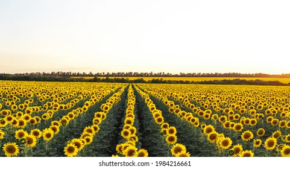

Sunflower: The Bright and Beneficial Crop

Uses of Sunflower
Sunflower is a versatile crop with many uses:
- Edible Seeds: Sunflower seeds are consumed as a snack, and used in cooking and baking.
- Sunflower Oil: Extracted from seeds, it's widely used for cooking, salad dressings, and frying.
- Bird Feed: Sunflower seeds are commonly used to feed birds.
- Medicinal Uses: Sunflower seeds are a good source of vitamins, and oils are used in skincare products.
Types of Sunflowers
There are different varieties of sunflowers, each suited for specific purposes:
- Oilseed Sunflowers: Grown for oil extraction, these have small seeds and high oil content.
- Confectionery Sunflowers: These have large seeds and are grown for snacks and food products.
- Wild Sunflowers: Often used in gardens and as ornamental plants, they attract pollinators.
Growth Requirements for Sunflowers
Sunflowers thrive under the right conditions:
- Climate: Prefers warm climates with temperatures between 70°F to 78°F (21°C to 26°C).
- Soil: Requires well-drained, loamy soil rich in organic matter with a slightly acidic to neutral pH.
- Water: Sunflowers need moderate watering, especially during the germination and flowering stages.
Natural Fertilizers for Sunflowers
To ensure healthy growth, consider using these natural fertilizers:
- Compost: Helps provide nutrients and improve soil structure.
- Bone Meal: A rich source of phosphorus, essential for root and flower development.
- Fish Emulsion: Provides nitrogen and promotes healthy foliage growth.
Pest and Disease Prevention
Sunflowers can be susceptible to various pests and diseases. Effective prevention includes:
- Sunflower Beetles: Can be controlled using neem oil or insecticidal soap.
- Powdery Mildew: Prevented by ensuring proper spacing and good air circulation around plants.
- Root Rot: Managed by ensuring proper drainage and avoiding over-watering.
Benefits of Sunflowers
- Rich in Nutrients: Sunflower seeds are rich in vitamins, minerals, and healthy fats.
- Eco-friendly: Sunflowers are excellent for pollinator support, attracting bees and other beneficial insects.
- Soil Improvement: Sunflowers help improve soil quality by breaking up compacted soil with their long roots.
Frequently Asked Questions
1. How long does it take for sunflowers to grow?
Sunflowers typically take 70 to 100 days to grow from planting to harvest, depending on the variety.
2. Can sunflowers be grown in containers?
Yes, dwarf sunflower varieties can be grown in containers and make great ornamental plants for small spaces.
Back to Crop List